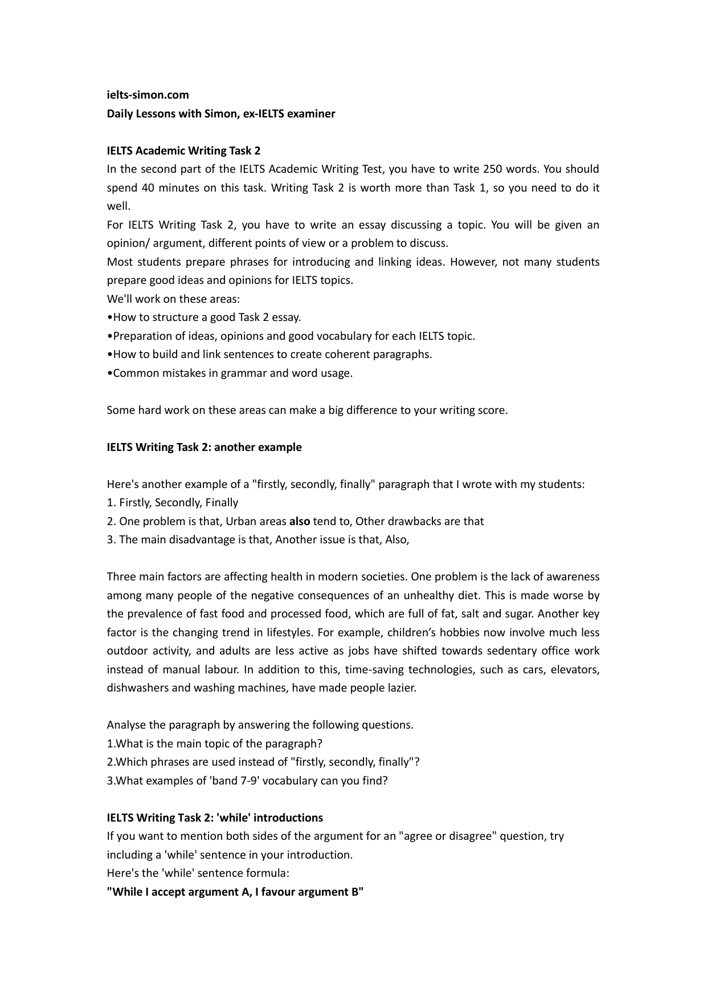

IELTS Academic Writing Task 2
ielts-simon.com Daily Lessons with Simon, ex-IELTS examiner
IELTS Academic Writing Task 2
In the second part of the IELTS Academic Writing Test, you have to write 250 words. You should spend 40 minutes on this task. Writing Task 2 is worth more than Task 1, so you need to do it well. For IELTS Writing Task 2, you have to write an essay discussing a topic. You will be given an opinion/ argument, different points of view or a problem to discuss. Most students prepare phrases for introducing and linking ideas. However, not many students prepare good ideas and opinions for IELTS topics.
We'll work on these areas:
•How to structure a good Task 2 essay. •Preparation of ideas, opinions and good vocabulary for each IELTS topic. •How to build and link sentences to create coherent paragraphs. •Common mistakes in grammar and word usage.
Some hard work on these areas can make a big difference to your writing score.
IELTS Writing Task 2: another example
Here's another example of a "firstly, secondly, finally" paragraph that I wrote with my students:
- 1. Firstly, Secondly, Finally
- 2. One problem is that, Urban areas also tend to, Other drawbacks are that
- 3. The main disadvantage is that, Another issue is that, Also,
Three main factors are affecting health in modern societies. One problem is the lack of awareness among many people of the negative consequences of an unhealthy diet. This is made worse by the prevalence of fast food and processed food, which are full of fat, salt and sugar. Another key factor is the changing trend in lifestyles. For example, children’s hobbies now involve much less outdoor activity, and adults are less active as jobs have shifted towards sedentary office work instead of manual labour. In addition to this, time-saving technologies, such as cars, elevators, dishwashers and washing machines, have made people lazier.
Analyse the paragraph by answering the following questions.
- 1.What is the main topic of the paragraph?
- 2.Which phrases are used instead of "firstly, secondly, finally"?
- 3.What examples of 'band 7-9' vocabulary can you find?
IELTS Writing Task 2: 'while' introductions
If you want to mention both sides of the argument for an "agree or disagree" question, try including a 'while' sentence in your introduction.
Here's the 'while' sentence formula:
"While I accept argument A, I favour argument B"
View the original PDF page
